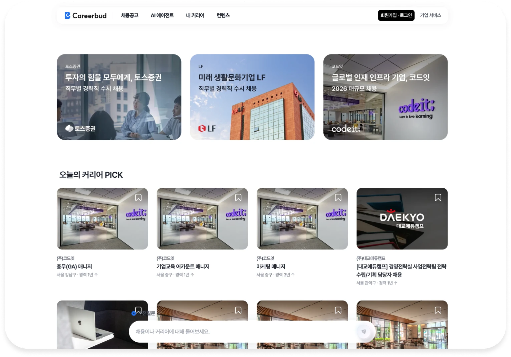
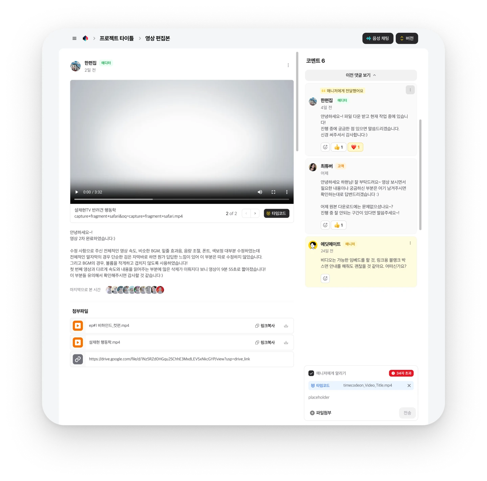
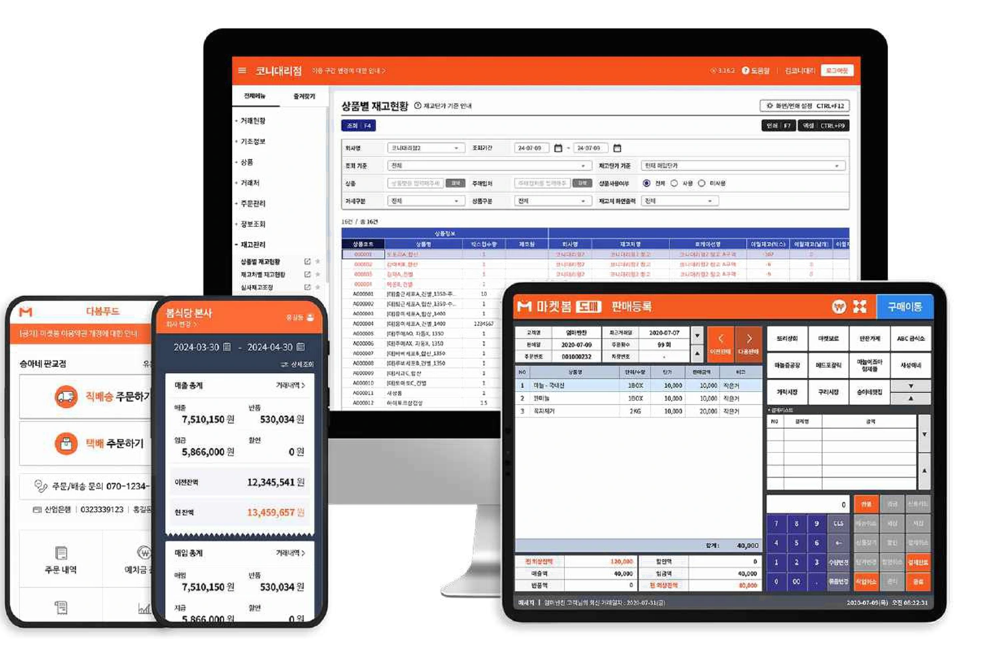
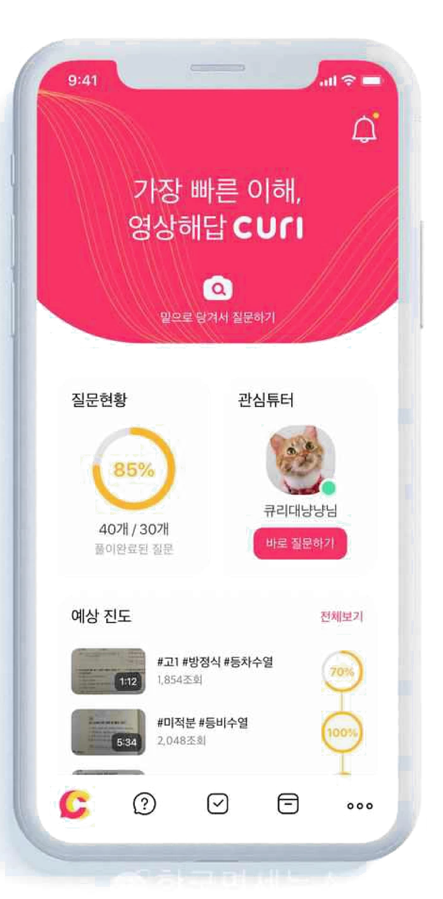
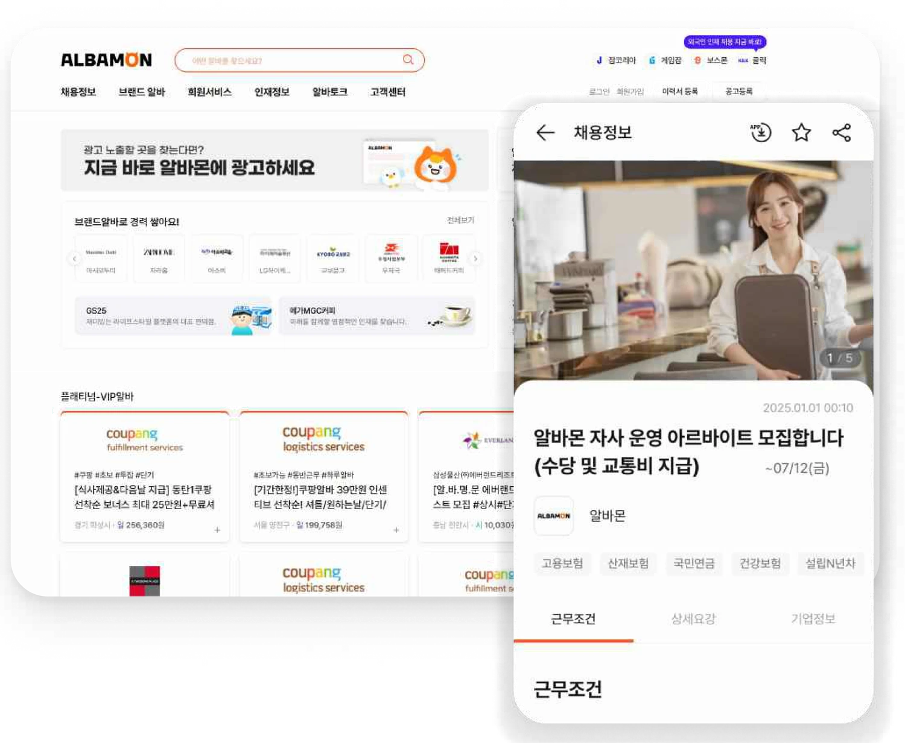

<title>최소희 포트폴리오</title>
<style>
  :root{
    --bg:#F5F6F7;
    --surface:#FFFFFF;
    --shot-bg:#F6F8FA;
    --surface-2:#F4F6F8;
    --border:#DFE3E9;
    --ink:#16181C;
    --ink-2:#3C4048;
    --ink-3:#565C66;
    --muted:#787E8A;
    --accent:#0B84F3;
    --accent-deep:#0A62BC;
    --accent-tint:#EDF5FE;
    --ok:#137A42;
    --ok-tint:#E9F7EF;
    --font:'Pretendard Variable',Pretendard,-apple-system,BlinkMacSystemFont,'Apple SD Gothic Neo','Noto Sans KR','Malgun Gothic',system-ui,sans-serif;
    --maxw:880px;
  }
  *{box-sizing:border-box;}
  html{scroll-behavior:smooth;}
  body{
    background:var(--bg);
    color:var(--ink);
    font-family:var(--font);
    padding-inline:24px;
    font-size:16px;
    line-height:1.75;
    letter-spacing:-.011em;
    word-break:keep-all;
    -webkit-font-smoothing:antialiased;
    -moz-osx-font-smoothing:grayscale;
  }
  @media (max-width:600px){ body{padding-inline:16px;font-size:15.5px;} }
  a{color:inherit;}
  img{max-width:100%;display:block;}
  h1,h2,h3,h4{margin:0;font-weight:700;color:var(--ink);letter-spacing:-.032em;line-height:1.4;text-wrap:balance;}
  p{margin:0;}
  ul{margin:0;padding:0;list-style:none;}
  b,strong{font-weight:600;color:var(--ink);}
  section[id]{scroll-margin-top:76px;}
  ::selection{background:var(--accent-tint);color:var(--ink);}
  @media (prefers-reduced-motion:reduce){
    html{scroll-behavior:auto;}
    *{animation-duration:.001ms !important;animation-iteration-count:1 !important;transition-duration:.001ms !important;}
  }
  .wrap{max-width:var(--maxw);margin-inline:auto;}

  /* header */
  .top{
    position:sticky;top:env(safe-area-inset-top,0px);z-index:40;
    background:rgba(245,246,247,.82);backdrop-filter:saturate(180%) blur(14px);
    border-bottom:1px solid var(--border);
    margin-inline:-24px;padding-inline:24px;
  }
  @media (max-width:600px){ .top{margin-inline:-16px;padding-inline:16px;} }
  .top-in{max-width:var(--maxw);margin-inline:auto;display:flex;align-items:center;justify-content:space-between;gap:16px;height:58px;}
  .brand{font-size:15px;font-weight:700;letter-spacing:-.03em;}
  .brand span{color:var(--muted);font-weight:500;margin-left:7px;font-size:13px;letter-spacing:-.01em;}
  .menu{display:flex;gap:4px;}
  .menu a{
    font-size:13.5px;font-weight:500;color:var(--ink-3);text-decoration:none;
    padding:7px 11px;border-radius:8px;transition:color .18s ease,background .18s ease;
  }
  .menu a:hover{color:var(--ink);background:rgba(12,20,40,.05);}
  .menu a.on{color:var(--accent-deep);background:var(--accent-tint);font-weight:600;}
  @media (max-width:640px){ .brand span{display:none;} .menu a{padding:6px 8px;font-size:13px;} }

  /* shared */
  section{padding-block:0 78px;}
  .eyebrow{display:inline-flex;align-items:center;gap:8px;font-size:12px;font-weight:700;color:var(--accent-deep);letter-spacing:.09em;margin-bottom:16px;}
  .eyebrow::before{content:"";width:16px;height:2px;border-radius:2px;background:var(--accent);}
  .card{
    background:var(--surface);border-radius:18px;padding:36px;
    box-shadow:0 1px 2px rgba(16,24,40,.04),0 8px 28px -12px rgba(16,24,40,.12);
  }
  @media (max-width:600px){ .card{padding:22px;border-radius:14px;} }

  .chip{
    display:inline-flex;align-items:center;gap:6px;padding:6px 12px;border-radius:8px;
    font-size:12.5px;font-weight:500;background:var(--surface-2);border:1px solid var(--border);color:var(--ink-2);
    transition:background .18s ease,color .18s ease;
  }
  .chip.ok{background:var(--ok-tint);color:var(--ok);font-weight:600;border-radius:999px;padding:5px 12px;font-size:12px;}
  .chip .dot{width:6px;height:6px;border-radius:50%;background:currentColor;animation:pulse 2.4s ease-in-out infinite;}
  @keyframes pulse{0%,100%{opacity:1;}50%{opacity:.45;}}
  .chips{display:flex;flex-wrap:wrap;gap:7px;}
  .chips .chip:hover{background:var(--accent-tint);color:var(--accent-deep);}

  .note{background:var(--accent-tint);border-radius:12px;padding:20px 22px;margin-top:18px;}
  .note .lbl{font-size:12px;font-weight:700;color:var(--accent-deep);letter-spacing:.04em;margin-bottom:7px;}
  .note p{font-size:14.5px;color:var(--ink-2);line-height:1.85;}
  .note p+.lbl{margin-top:16px;}

  /* hero */
  .hero{padding-top:52px;}
  .id{display:flex;align-items:center;gap:15px;margin-bottom:26px;}
  .id img{width:60px;height:60px;border-radius:50%;object-fit:cover;box-shadow:0 2px 10px rgba(20,25,40,.12);}
  .id .nm{font-size:16px;font-weight:700;letter-spacing:-.03em;}
  .id .rl{font-size:13px;color:var(--ink-3);margin-top:1px;}
  .hero h1{font-size:clamp(28px,4vw,42px);line-height:1.36;letter-spacing:-.037em;}
  .hero h1 .hl{background:linear-gradient(transparent 62%,rgba(11,132,243,.3) 62%);padding:0 2px;}
  .hero .lead{margin-top:24px;max-width:640px;color:var(--ink-2);font-size:16.5px;line-height:1.9;}
  /* about */
  .about h2{font-size:clamp(20px,2.7vw,26px);margin-bottom:20px;}
  .about p{color:var(--ink-2);font-size:16px;line-height:1.9;}
  .about p+p{margin-top:16px;}
  .steps{margin-top:34px;padding-top:30px;border-top:1px solid var(--border);display:grid;grid-template-columns:repeat(3,1fr);gap:26px;}
  @media (max-width:760px){ .steps{grid-template-columns:1fr;gap:22px;} }
  .step .n{display:inline-flex;align-items:center;gap:7px;font-size:11.5px;font-weight:700;color:var(--ink-3);letter-spacing:.09em;margin-bottom:10px;}
  .step .n::before{content:"";width:5px;height:5px;border-radius:50%;background:var(--accent);}
  .step h4{font-size:15.5px;margin-bottom:7px;letter-spacing:-.028em;}
  .step p{font-size:14px;color:var(--ink-3);line-height:1.8;}
  .block{margin-top:30px;padding-top:26px;border-top:1px solid var(--border);}
  .block .t{font-size:12px;font-weight:700;color:var(--muted);letter-spacing:.08em;margin-bottom:14px;}
  .edu{display:flex;flex-direction:column;gap:14px;}
  .edu-row{display:flex;flex-wrap:wrap;justify-content:space-between;gap:8px;font-size:14.5px;}
  .edu-row .s{font-weight:600;letter-spacing:-.018em;}
  .edu-row .d{color:var(--muted);font-size:13px;}

  /* timeline */
  .tl{position:relative;padding-left:26px;}
  .tl::before{content:"";position:absolute;left:4px;top:10px;bottom:10px;width:1px;background:var(--border);}
  .tl-item{position:relative;padding-bottom:34px;}
  .tl-item:last-child{padding-bottom:0;}
  .tl-item::before{content:"";position:absolute;left:-26px;top:7px;width:9px;height:9px;border-radius:50%;background:var(--surface);box-shadow:0 0 0 2px var(--border);}
  .tl-item.now::before{background:var(--ok);box-shadow:0 0 0 2px var(--ok),0 0 0 6px var(--ok-tint);}
  .tl-when{font-size:12.5px;color:var(--muted);font-weight:500;}
  .tl-head{display:flex;flex-wrap:wrap;align-items:baseline;gap:9px;margin:6px 0 8px;}
  .tl-head .org{font-size:18px;font-weight:700;letter-spacing:-.03em;}
  .tl-head .pos{font-size:13px;color:var(--ink-3);}
  .tl-desc{font-size:13.5px;color:var(--ink-3);line-height:1.8;}
  .tl-list{margin-top:12px;display:flex;flex-direction:column;gap:10px;}
  .tl-list li{font-size:14.5px;color:var(--ink-2);line-height:1.85;padding-left:15px;position:relative;}
  .tl-list li::before{content:"";position:absolute;left:0;top:11px;width:4px;height:4px;border-radius:50%;background:var(--accent);opacity:.55;}
  .tl-list li b{color:var(--ink);font-weight:700;}

  /* work */
  .work-head{margin-bottom:18px;}
  .work-head h2{font-size:clamp(21px,2.9vw,28px);}
  .work-head p{margin-top:11px;color:var(--ink-3);font-size:15.5px;}

  .projnav{
    position:sticky;top:calc(58px + env(safe-area-inset-top,0px));z-index:30;
    display:flex;gap:6px;overflow-x:auto;scrollbar-width:none;
    padding:12px 0 14px;margin-bottom:8px;
    background:linear-gradient(to bottom,rgba(245,246,247,.96) 72%,rgba(245,246,247,0));
    backdrop-filter:blur(8px);
  }
  .projnav::-webkit-scrollbar{display:none;}
  .projnav a{
    white-space:nowrap;font-size:13px;font-weight:600;color:var(--ink-3);
    background:var(--surface);padding:8px 15px;border-radius:999px;text-decoration:none;
    box-shadow:0 1px 2px rgba(16,24,40,.07);letter-spacing:-.015em;
    transition:background .2s ease,color .2s ease,transform .16s ease;
  }
  .projnav a:hover{color:var(--ink);transform:translateY(-1px);}
  .projnav a.all{margin-left:auto;}
  .proj[hidden]{display:none;}
  .proj{animation:fadeIn .28s ease both;}
  @keyframes fadeIn{from{opacity:0;transform:translateY(6px);}to{opacity:1;transform:none;}}
  .projnav a.on{background:var(--ink);color:#fff;}
  .proj{margin-bottom:22px;scroll-margin-top:118px;}
  .proj-head{display:flex;flex-wrap:wrap;justify-content:space-between;gap:12px;align-items:flex-start;}
  .proj-head h3{font-size:clamp(20px,2.6vw,25px);letter-spacing:-.033em;}
  .proj-head .sub{color:var(--ink-3);font-size:14px;margin-top:7px;line-height:1.7;}
  .proj-head .when{font-size:12.5px;color:var(--muted);text-align:right;white-space:nowrap;line-height:1.7;}

  .shot{margin-block:24px;display:flex;justify-content:center;}
  .shot img{width:100%;transition:transform .5s cubic-bezier(.2,.7,.3,1);}
  .shot.narrow img{width:auto;max-width:290px;}
  @media (hover:hover){ .shot:hover img{transform:translateY(-6px);} }

  .facts{display:flex;flex-wrap:wrap;gap:10px 30px;font-size:13.5px;color:var(--ink-2);padding-bottom:22px;border-bottom:1px solid var(--border);}
  .facts b{color:var(--muted);font-weight:500;font-size:12.5px;display:block;margin-bottom:2px;}
  .process{margin-top:22px;background:var(--surface-2);border:1px solid var(--border);border-radius:12px;padding:18px 20px;}
  .process .pt{font-size:11px;font-weight:700;color:var(--accent-deep);letter-spacing:.09em;margin-bottom:13px;}
  .prow{display:flex;flex-wrap:wrap;align-items:center;gap:7px;}
  .prow .st{
    display:inline-flex;align-items:center;gap:8px;background:var(--surface);
    border:1px solid var(--border);border-radius:9px;padding:8px 13px;font-size:12.5px;color:var(--ink);font-weight:600;
    box-shadow:0 1px 2px rgba(16,24,40,.05);
    transition:transform .18s ease,box-shadow .18s ease;
  }
  @media (hover:hover){ .prow .st:hover{transform:translateY(-1px);box-shadow:0 4px 10px -3px rgba(16,24,40,.18);} }
  .prow .st .num{
    font-size:10px;font-weight:700;color:var(--accent-deep);background:var(--accent-tint);
    border-radius:5px;padding:2px 5px;letter-spacing:0;line-height:1.5;
  }
  .prow .ar{color:#A5ABB6;font-size:11px;user-select:none;}
  @media (max-width:600px){ .prow .st{padding:7px 10px;font-size:12px;} }

  .story{margin-top:26px;display:flex;flex-direction:column;gap:26px;}
  .story h5{margin:0 0 11px;font-size:11.5px;font-weight:700;color:var(--accent-deep);letter-spacing:.08em;}
  .story h5.ko{font-size:14px;letter-spacing:-.02em;}
  .story p{font-size:15px;color:var(--ink-2);line-height:1.9;}
  .story p+p{margin-top:12px;}
  .story .lead{font-weight:700;color:var(--ink);}
  .story .turn{padding-top:22px;border-top:1px solid var(--border);}
  .story .turn-t{font-size:16px;font-weight:700;color:var(--ink);letter-spacing:-.03em;}

  .voices{margin-top:14px;display:flex;flex-direction:column;gap:9px;}
  .voice{background:var(--surface-2);border-radius:10px;padding:14px 16px;}
  .voice .who{font-size:12.5px;font-weight:600;color:var(--ink);margin-bottom:4px;}
  .voice .q{font-size:14px;color:var(--ink-2);line-height:1.75;}
  .voice .n{font-size:12px;color:var(--muted);margin-top:6px;}

  .bullets{margin-top:12px;display:flex;flex-direction:column;gap:10px;}
  .bullets li{font-size:14.5px;color:var(--ink-2);line-height:1.85;padding-left:15px;position:relative;}
  .bullets li::before{content:"";position:absolute;left:0;top:11px;width:4px;height:4px;border-radius:50%;background:var(--accent);}

  .kpis{display:flex;flex-wrap:wrap;gap:10px;margin-top:18px;}
  .kpi{flex:1;min-width:132px;background:var(--surface-2);border-radius:11px;padding:15px 17px;}
  .kpi .v{font-size:21px;font-weight:700;letter-spacing:-.035em;}
  .kpi .k{font-size:12.5px;color:var(--ink-3);margin-top:3px;}

  /* contact */
  .contact h2{font-size:clamp(21px,2.9vw,28px);max-width:540px;}
  .contact p{margin-top:16px;color:var(--ink-2);font-size:15.5px;max-width:580px;line-height:1.9;}
  .contact .info{margin-top:0;display:flex;flex-wrap:wrap;gap:10px 32px;font-size:13.5px;color:var(--ink-2);}
  .contact .info b{color:var(--muted);font-weight:500;font-size:12.5px;display:block;margin-bottom:2px;}
  .mail{display:inline-flex;align-items:center;gap:7px;flex-wrap:wrap;}
  .copy{
    display:inline-flex;align-items:center;gap:4px;border:none;cursor:pointer;
    background:var(--surface-2);color:var(--ink-3);border-radius:7px;padding:4px 8px;
    font-family:inherit;font-size:11.5px;font-weight:600;letter-spacing:-.01em;
    transition:background .18s ease,color .18s ease;
  }
  .copy:hover{background:var(--accent-tint);color:var(--accent-deep);}
  .copy.done{background:var(--ok-tint);color:var(--ok);}
  .copy svg{width:12px;height:12px;flex:none;}
  .actions{display:flex;flex-wrap:wrap;gap:10px;margin-top:26px;}
  .btn{
    display:inline-flex;align-items:center;gap:7px;padding:12px 20px;border-radius:10px;
    font-weight:600;font-size:14px;text-decoration:none;cursor:pointer;
    background:var(--surface-2);color:var(--ink);border:none;font-family:inherit;letter-spacing:-.01em;
    transition:transform .16s ease,background .2s ease,box-shadow .2s ease,color .2s ease;
  }
  .btn:hover{background:#E7EBF0;transform:translateY(-1px);}
  .btn.go{background:var(--ink);color:#fff;}
  .btn.go:hover{background:#000;box-shadow:0 8px 20px -8px rgba(0,0,0,.5);}
  .btn:active{transform:translateY(0);}
  .sec-head{display:flex;align-items:center;justify-content:space-between;gap:12px;margin-bottom:16px;}
  .sec-head .eyebrow{margin-bottom:0;}
  .dl{display:flex;gap:8px;flex-wrap:wrap;}
  .dl-btn{
    display:inline-flex;align-items:center;gap:7px;padding:8px 14px;border-radius:9px;cursor:pointer;
    font-family:inherit;font-size:13px;font-weight:600;letter-spacing:-.01em;
    color:var(--accent-deep);background:var(--surface);border:1px solid var(--border);
    transition:border-color .18s ease,background .18s ease,transform .18s ease,box-shadow .18s ease;
  }
  .dl-btn:hover{border-color:var(--accent);background:var(--accent-tint);transform:translateY(-1px);}
  .dl-btn.go{background:var(--ink);border-color:var(--ink);color:#fff;}
  .dl-btn.go:hover{background:#000;border-color:#000;box-shadow:0 8px 18px -8px rgba(0,0,0,.5);}
  .dl-btn[disabled]{opacity:.55;cursor:default;transform:none;}
  .dl-btn:focus-visible{outline:2px solid var(--accent);outline-offset:2px;}

  footer{padding-block:34px;font-size:12px;color:var(--muted);}
</style>

<header class="top">
  <div class="top-in">
    <div class="brand">최소희<span>Product Manager</span></div>
    <nav class="menu">
      <a href="#about">About</a>
      <a href="#career">Career</a>
      <a href="#work">Work</a>
      <a href="#contact">Contact</a>
    </nav>
  </div>
</header>

<main class="wrap">

  <section id="top" class="hero">
    <div class="id">
      
      <div>
        <div class="nm">최소희</div>
        <div class="rl">Product Manager · 현) 커리어벗 포털기획팀 팀장 (Lead PM)</div>
        <div style="margin-top:6px;"><span class="chip ok"><span class="dot"></span>재직중</span></div>
      </div>
    </div>

    <h1>모호한 문제를 <span class="hl">구조</span>로 정리하고,<br>구조를 <span class="hl">실행 기준</span>으로 바꿉니다.</h1>
    <p class="lead">HR 테크, 에듀테크, B2B 유통, 영상 협업, 채용 플랫폼까지 다양한 도메인에서 제품 기획을 담당했습니다. 결제와 검수, 협업처럼 규칙이 복잡하고 예외가 많은 영역에서 제품과 정책을 함께 설계해왔고, <b>현재는 Lead PM으로서 기획팀을 이끌고 있습니다.</b></p>

  </section>

  <section id="about">
    <div class="sec-head">
      <div class="eyebrow">ABOUT</div>
      <div class="dl">
        <button class="dl-btn" id="resumeBtn" type="button" data-file="resume" data-name="이력서_최소희.pdf"><svg width="14" height="14" viewBox="0 0 24 24" fill="none" stroke="currentColor" stroke-width="2.2" stroke-linecap="round" stroke-linejoin="round" aria-hidden="true"><path d="M12 3v12"/><path d="m7 10 5 5 5-5"/><path d="M5 21h14"/></svg>이력서</button>
        <button class="dl-btn go" id="portfolioBtn" type="button" data-file="portfolio" data-name="포트폴리오_최소희.pdf"><svg width="14" height="14" viewBox="0 0 24 24" fill="none" stroke="currentColor" stroke-width="2.2" stroke-linecap="round" stroke-linejoin="round" aria-hidden="true"><path d="M12 3v12"/><path d="m7 10 5 5 5-5"/><path d="M5 21h14"/></svg>포트폴리오</button>
      </div>
    </div>
    <div class="card about">
      <h2>규칙과 예외가 많은 제품을 주로 맡아왔습니다.</h2>
      <p>구독 결제와 정산, 채용 공고 검수, 상품·채용권 관리처럼 <b>경우의 수가 많고 예외가 자주 생기는 영역</b>을 담당했습니다. 이런 제품은 화면보다 기준이 먼저 서 있어야 하고, 기준이 없으면 같은 질문이 현업과 개발 양쪽에서 반복해서 올라옵니다.</p>
      <p>그래서 기능 정의와 함께 정책과 예외 처리 기준을 문서로 만들어, <b>해석이 엇갈리던 요구사항을 같은 기준으로 판단할 수 있게</b> 정리해왔습니다. 논의가 길어질 때는 쟁점을 우선순위로 다시 정리해 결정이 나게 만드는 역할을 자주 맡았습니다.</p>

      <div class="steps">
        <div class="step">
          <div class="n">STEP 01</div>
          <h4>데이터로 문제를 좁힙니다</h4>
          <p>대화 로그, 신고 건수, 결제 실패율처럼 실제 기록을 정량화해 가장 먼저 풀어야 할 문제를 고릅니다.</p>
        </div>
        <div class="step">
          <div class="n">STEP 02</div>
          <h4>정책과 예외를 문서로 남깁니다</h4>
          <p>기능 명세와 처리 기준, 예외 케이스를 PRD와 플로우 차트로 정리해 개발과 운영이 같은 문서를 보게 합니다.</p>
        </div>
        <div class="step">
          <div class="n">STEP 03</div>
          <h4>지표로 확인하고 보완합니다</h4>
          <p>출시 후 CS 인입과 실패율 같은 지표를 추적하며, 반복 발생하는 유형을 다시 기준에 반영합니다.</p>
        </div>
      </div>

      <div class="block">
        <div class="t">TOOLS</div>
        <div class="chips">
          <span class="chip">Figma</span><span class="chip">Zeplin</span><span class="chip">Jira</span>
          <span class="chip">Confluence</span><span class="chip">Notion</span><span class="chip">Slack</span>
          <span class="chip">draw.io</span><span class="chip">DBeaver</span><span class="chip">SQL</span>
          <span class="chip">GA4</span><span class="chip">Metabase</span><span class="chip">HTML/CSS</span><span class="chip">FlutterFlow</span>
        </div>
      </div>

      <div class="block">
        <div class="t">EDUCATION</div>
        <div class="edu">
          <div class="edu-row"><span class="s">한국방송통신대학교 통계·데이터과학과</span><span class="d">2023.02 ~ 2025.08 편입·졸업</span></div>
          <div class="edu-row"><span class="s">청강문화산업대학 e-비즈니스학과</span><span class="d">2006.03 ~ 2008.02 졸업</span></div>
          <div class="edu-row"><span class="s">데이터분석준전문가 (ADsP)</span><span class="d">2025.08 취득</span></div>
        </div>
      </div>
    </div>
  </section>

  <section id="career">
    <div class="eyebrow">CAREER</div>
    <div class="card">
      <div class="tl">
        <div class="tl-item now">
          <div class="tl-when">2026.04 ~ 현재 · 6개월</div>
          <div class="tl-head"><span class="org">커리어벗</span><span class="pos">포털기획팀 팀장</span></div>
          <div class="tl-desc">채용 플랫폼 · 기획팀 총괄</div>
          <ul class="tl-list">
            <li><b>팀 리딩</b> PM 1명과 UI/UX 디자이너 2명으로 구성된 포털기획팀을 이끌며 업무 분장과 일정, 기획 산출물의 품질을 관리하고 있습니다.</li>
            <li><b>프로덕트 기획 총괄</b> 서비스 주요 업데이트의 방향과 우선순위를 정하고 로드맵을 수립합니다.</li>
            <li><b>협업 환경 및 프로세스 구축</b> Jira와 Confluence를 도입해 워크스페이스를 세팅하고, 티켓 기반 태스크 관리 체계와 사내 문서화 환경을 구축했습니다.</li>
            <li><b>상품·결제 구조 단순화</b> 분산되어 있던 패키지 상품을 단일 상품으로 통합하는 방향을 제안하고, 결제수단과 유효기간 등 정책 전반을 설계해 경영진 승인 후 적용했습니다.</li>
          </ul>
        </div>
        <div class="tl-item">
          <div class="tl-when">2023.05 ~ 2025.05 · 2년 1개월</div>
          <div class="tl-head"><span class="org">에딧메이트</span><span class="pos">제품팀 PM</span></div>
          <div class="tl-desc">영상 제작 협업 플랫폼 · IT 스타트업</div>
          <ul class="tl-list">
            <li><b>영상 제작 협업 신규 서비스 런칭</b> 분산된 커뮤니케이션과 피드백 문제를 정의하고, 이를 줄이기 위한 중앙화 MVP를 기획, 출시, 검증했습니다.</li>
            <li><b>업무 리소스 30% 절감</b> 피드백 기능과 작업 이력 관리를 체계화해 수동 확인과 재작업을 줄였습니다.</li>
            <li><b>완료 프로젝트 17.1% 상승</b> 피드백 추적과 작업물 관리 흐름을 단일 타임라인으로 연결해 작업 누락과 지연 리스크를 완화했습니다.</li>
            <li><b>활성 고객 10% 증가</b> 서비스 편의성을 개선해 반복 사용률과 고객 유지율을 높였습니다.</li>
          </ul>
        </div>
        <div class="tl-item">
          <div class="tl-when">2022.12 ~ 2023.05 · 6개월</div>
          <div class="tl-head"><span class="org">마켓보로</span><span class="pos">Product Governance실</span></div>
          <div class="tl-desc">B2B 식자재 유통 플랫폼 · 매출 261억</div>
          <ul class="tl-list">
            <li><b>모바일 전표 서비스 기획</b> PC 기반 전표 업무를 모바일 환경에 맞게 전환해 현장 업무 흐름을 반영했습니다.</li>
            <li><b>입력 정확도 개선</b> 자동 계산과 입력 검증 로직을 반영해 오입력 가능성을 줄였습니다.</li>
            <li><b>모바일 사용성 반영</b> 현장 업무 특성에 맞는 UX·UI와 데이터 동기화 기준을 수립했습니다.</li>
          </ul>
        </div>
        <div class="tl-item">
          <div class="tl-when">2020.11 ~ 2022.03 · 1년 5개월</div>
          <div class="tl-head"><span class="org">플랫비</span><span class="pos">기획팀</span></div>
          <div class="tl-desc">에듀테크 앱 서비스 · 이투스 자회사</div>
          <ul class="tl-list">
            <li><b>정기 결제 성공률 97% 달성</b> 결제 실패 원인을 분석하고 재결제 로직을 반영해 결제 안정성을 높였습니다.</li>
            <li><b>신규 상품 도입 리드타임 60% 단축</b> 상품 코드 체계를 구성해 상품 세팅 기간을 7일에서 3일로 줄였습니다.</li>
            <li><b>결제·상품 문의 비중 50% 감소</b> 예외 처리 기준과 운영 어드민 기능을 반영해 운영 효율을 개선했습니다.</li>
          </ul>
        </div>
        <div class="tl-item">
          <div class="tl-when">2014.04 ~ 2019.11 · 5년 8개월</div>
          <div class="tl-head"><span class="org">웍스피어</span><span class="pos">알바몬기획팀 선임매니저</span></div>
          <div class="tl-desc">HR 테크 플랫폼 · 매출 1,000억 이상</div>
          <ul class="tl-list">
            <li><b>지원 전환율 15% 개선</b> 중복·무관 공고를 줄여 구직자의 탐색 경험과 지원 품질을 개선했습니다.</li>
            <li><b>유효 공고 비중 9% 개선</b> 허위·불법 공고 차단 기준을 반영해 플랫폼 신뢰도를 강화했습니다.</li>
            <li><b>검수 기준 및 운영 기능 체계화</b> 심사 기준과 처리 절차를 구체화하고 위험 등급 분류 기능을 적용했습니다.</li>
          </ul>
        </div>
      </div>
    </div>
  </section>

  <section id="work">
    <div class="eyebrow">WORK</div>
    <div class="work-head">
      <h2>문제를 성과로 바꾼 프로젝트</h2>
      <p>문제 정의, 솔루션, 성과 순서로 정리했습니다.</p>
    </div>

    <nav class="projnav">
      <a href="#p-careerbud">커리어벗</a>
      <a href="#p-editmate">에딧메이트</a>
      <a href="#p-marketboro">마켓보로</a>
      <a href="#p-flatbe">플랫비</a>
      <a href="#p-albamon">웍스피어</a>
      <a href="#all" class="all">전체</a>
    </nav>

    <div class="proj card" id="p-careerbud">
      <div class="proj-head">
        <div>
          <h3>커리어벗 <span class="chip ok" style="vertical-align:middle;margin-left:6px;"><span class="dot"></span>재직 중</span></h3>
          <p class="sub">포털기획팀 리딩과 상품·결제 정책 설계 · 채용 플랫폼</p>
        </div>
        <div class="when">2026.04 ~ 현재<br>기획팀 4인</div>
      </div>
      <div class="chips" style="margin-top:14px;"><span class="chip">기획팀 리딩</span><span class="chip">상품·결제 정책</span><span class="chip">협업 체계 구축</span></div>

      <div class="shot"></div>

      <div class="facts" style="margin-top:24px;">
        <div><b>팀 구성</b>Lead PM 1(본인) · PM 1 · UI/UX 디자이너 2</div>
        <div><b>역할</b>포털기획팀 팀장 · 프로덕트 기획 총괄</div>
      </div>

      
      <div class="story">
        <div>
          <h5>TEAM LEADING</h5>
          <p>PM 1명과 UI/UX 디자이너 2명으로 구성된 포털기획팀을 이끌며, 서비스 주요 업데이트의 방향과 우선순위를 결정합니다. 상세 기획은 팀원에게 분배한 뒤 기획 리뷰와 최종 검수로 산출물 기준을 관리합니다.</p>
        </div>
        <div class="turn">
          <div class="turn-t">협업 체계 구축</div>
        </div>
        <div>
          <h5>PROBLEM DEFINITION</h5>
          <p>전사의 모든 업무 요청과 논의가 슬랙에서만 휘발성으로 오가고 있었습니다. 누가, 언제, 어떤 기능을 변경했는지, <b>특히 의사결정의 배경이 남지 않아 타 부서의 히스토리 파악에 불필요한 리소스가 낭비</b>되고 있었습니다. 단순한 툴의 문제가 아니라, 전사가 일하는 방식과 기록 체계를 근본적으로 바꿔야 한다고 판단했습니다.</p>
        </div>
        <div>
          <h5>SOLUTION</h5>
          <p>Jira와 Confluence를 도입해 전사 협업 프로세스를 티켓 기반으로 정의했습니다.</p>
          <ul class="bullets">
            <li><b>요청 경로 일원화</b> 업무 요청을 티켓으로 받고 티켓 유형과 담당자·상태 지정 규칙, 산출물 문서화 기준을 정의해 기획·디자인·개발 작업을 단일 이력으로 연결했습니다.</li>
            <li><b>일정 관리 주체 분리</b> 개별 업무는 담당자가 직접 티켓을 만들고 시작일과 기한을 지정하게 했습니다. 상위 에픽과 스프린트는 제가 맡아 프로젝트 범위와 전체 일정의 큰 틀을 통제했습니다.</li>
            <li><b>시범 적용 후 전사 확대</b> 소규모 프로젝트에 먼저 적용해 티켓 생성 기준을 유관 부서와 확정했습니다. 일정 입력 부담에 따른 초기 저항은 전사 업무 현황과 지연 건을 가시화해 해소하고, 티켓 기반 처리 규칙을 전사 공통 절차로 규정했습니다.</li>
          </ul>
        </div>
        <div>
          <h5>OUTCOME</h5>
          <p>업무 담당자와 배포 이력, 의사결정 맥락을 티켓에 기록해 <b>전사 구성원 누구나 프로젝트 히스토리를 파악</b>할 수 있도록 개선했습니다. 요청 접수 시점에 실측 리드타임으로 완료 예정일을 산정하게 되면서, 부서 간 일정 협의가 경험적 추정에서 데이터 기반 산정으로 바뀌었습니다. 에픽·스프린트 단위 진척 데이터는 지연이 반복되는 구간과 인력 부하를 식별해 업무 재배분과 우선순위 조정의 근거로 쓰고 있습니다.</p>
        </div>
        <div class="turn">
          <div class="turn-t">상품·결제 구조 단순화</div>
        </div>
        <div>
          <p>패키지 여러 종과 등급별 추가 상품으로 흩어져 있던 구조를 단일 상품으로 통합하는 방향을 제안하고, 결제수단과 유효기간, 공고 연동 방식 등 정책 전반을 설계했습니다. 고객은 수량만 결정하면 되고, 영업 재량이 가격에 개입할 여지가 사라졌습니다. 등급마다 달랐던 예외 규정도 단일 기준으로 통합했습니다.</p>
          <p>정책 수립과 구조 제안은 직접 담당했고, 화면 기획 실무는 팀원이 맡아 기획 리뷰와 최종 검수를 진행했습니다.</p>
        </div>
      </div>
    </div>

    <div class="proj card" id="p-editmate">
      <div class="proj-head">
        <div>
          <h3>에딧메이트</h3>
          <p class="sub">영상 제작 협업 플랫폼 신규 서비스 출시 · WEB / APP</p>
        </div>
        <div class="when">2023.05 ~ 2025.05<br>팀 4인</div>
      </div>
      <div class="chips" style="margin-top:14px;"><span class="chip">영상제작 협업툴</span><span class="chip">피드백 관리</span><span class="chip">작업 흐름 관리</span><span class="chip">WaaS</span></div>

      <div class="shot"></div>

      <div class="facts">
        <div><b>팀 구성</b>PM 1 · 디자인 1 · 개발 2</div>
        <div><b>기여</b>서비스 구조·핵심기능 설계 주도 100% · 프로젝트 관리 100%</div>
      </div>
      <div class="process">
        <div class="pt">WORK PROCESS</div>
        <div class="prow">
          <span class="st"><span class="num">01</span>문제 파악 및 정의</span>
          <span class="ar">▶</span>
          <span class="st"><span class="num">02</span>사용자 요구 분석</span>
          <span class="ar">▶</span>
          <span class="st"><span class="num">03</span>유저 스토리</span>
          <span class="ar">▶</span>
          <span class="st"><span class="num">04</span>핵심 기능 정의</span>
          <span class="ar">▶</span>
          <span class="st"><span class="num">05</span>IA·PRD 설계</span>
          <span class="ar">▶</span>
          <span class="st"><span class="num">06</span>플로우 차트</span>
          <span class="ar">▶</span>
          <span class="st"><span class="num">07</span>프로토타입</span>
          <span class="ar">▶</span>
          <span class="st"><span class="num">08</span>MVP 출시 및 검증</span>
        </div>
      </div>

      <div class="story">
        <div>
          <h5>PROBLEM DEFINITION</h5>
          <p>작업물 업로드와 버전 관리, 피드백을 중앙에서 관리하는 체계가 없어 카카오톡, 구글독스, 노션, 슬랙 등 외부 채널로 협업이 분산됐습니다. 채널별 커뮤니케이션을 정량화한 결과 카카오톡 54.6%, 구글독스 21.3%, 노션 14.8%, 기타 9.3%로 소통이 파편화되어 있었습니다.</p>
          <p>클라이언트는 요청이 누락되고, 편집자는 수정 이력을 추적하기 어려웠으며, 매니저는 프로젝트 단위 일정과 리소스 가시성이 낮았습니다.</p>
          <div class="note">
            <div class="lbl">도출 인사이트</div>
            <p>피드백 분산과 관리 체계 부재를 최우선 해결 과제로 도출하고, 커뮤니케이션과 작업물 관리의 중앙화를 MVP의 최우선 목표로 설정했습니다.</p>
          </div>
        </div>
        <div>
          <h5>SOLUTION</h5>
          <p>핵심 로직과 정책을 정의해 네 가지 기능군으로 구조화했습니다.</p>
          <ul class="bullets">
            <li><b>협업 / 커뮤니케이션</b> 타임코드 피드백, 작업 가이드, 확인 로그</li>
            <li><b>산출물 / 작업물 관리</b> 자동 버전 관리, 아카이브</li>
            <li><b>운영 / 권한 관리</b> 폐쇄형 권한 관리, 채널형 구조</li>
            <li><b>진행 추적</b> 실시간 알림, 진척 상태</li>
          </ul>
          <p>빈도 높은 피드백과 업로드 기능을 메인에 상시 노출하는 접근성 최적화, 영상 확인과 피드백 작성을 한 화면에서 처리하는 원페이지 워크플로우, 권한별로 불필요한 메뉴를 숨기는 메뉴 간소화로 UX를 설계했습니다.</p>
        </div>
        <div>
          <h5>OUTCOME</h5>
          <p>피드백이 버전과 맥락에 연결되며 수정 이력 파악이 쉬워졌고, 요청 누락과 중복 확인이 줄었습니다.</p>
          <div class="kpis">
            <div class="kpi"><div class="v">+10%</div><div class="k">활성 고객</div></div>
            <div class="kpi"><div class="v">+17.1%</div><div class="k">완료 프로젝트</div></div>
            <div class="kpi"><div class="v">-30%</div><div class="k">업무 리소스</div></div>
          </div>
          <div class="note">
            <div class="lbl">회고</div>
            <p>채널 파편화를 구조적으로 해결하는 것이 사용자 경험과 운영 효율 개선으로 이어짐을 확인했습니다. 사용자 불편을 수치화하고 이를 해결하는 기능을 설계하는 과정이 서비스 성과에 중요하다는 점도 배웠습니다. 다만 제한된 사용자 데이터로 검증을 진행해, 더 큰 운영 환경에서의 안정성 검증은 과제로 남았습니다.</p>
            <div class="lbl">다음 단계</div>
            <p>피드백의 단순 기록을 넘어 데이터 기반 인사이트를 도출하는 분석 기능으로 확장하고, 사용자 만족도와 재사용률 등 질적 성장 지표를 관리하는 체계를 수립할 계획입니다.</p>
          </div>
        </div>
      </div>
    </div>

    <div class="proj card" id="p-marketboro">
      <div class="proj-head">
        <div>
          <h3>마켓보로</h3>
          <p class="sub">PC 기반 전표 시스템의 모바일 전환 기획 · Product Governance실</p>
        </div>
        <div class="when">2022.12 ~ 2023.05<br>팀 6~7인</div>
      </div>
      <div class="chips" style="margin-top:14px;"><span class="chip">푸드테크</span><span class="chip">모바일 전표</span><span class="chip">현장 업무 개선</span><span class="chip">B2B 유통 플랫폼</span></div>

      <div class="shot"></div>

      <div class="facts">
        <div><b>회사</b>B2B 식자재 유통 플랫폼 · 매출 261억</div>
        <div><b>기여</b>전표 로직·예외 케이스 정리 70% · IA 구조화 80%</div>
      </div>
      <div class="process">
        <div class="pt">WORK PROCESS</div>
        <div class="prow">
          <span class="st"><span class="num">01</span>문제 파악 및 정의</span>
          <span class="ar">▶</span>
          <span class="st"><span class="num">02</span>사용자 요구 분석</span>
          <span class="ar">▶</span>
          <span class="st"><span class="num">03</span>정책 및 설계 기준 정리</span>
          <span class="ar">▶</span>
          <span class="st"><span class="num">04</span>기능 검토</span>
          <span class="ar">▶</span>
          <span class="st"><span class="num">05</span>와이어프레임·플로우 차트</span>
          <span class="ar">▶</span>
          <span class="st"><span class="num">06</span>설계안 적용</span>
        </div>
      </div>

      <div class="story">
        <div>
          <h5>PROBLEM DEFINITION</h5>
          <p><span class="lead">PC 환경 제약.</span> 현장에서 즉시 처리하기 어려운 PC 중심 환경으로 인해 업무 공백과 비효율이 발생했습니다.</p>
          <p><span class="lead">입력 누락 및 지연.</span> 수기 메모 후 재입력하는 과정에서 오입력과 누락 가능성이 높고 처리 속도도 지연됐습니다.</p>
        </div>
        <div>
          <h5>SOLUTION</h5>
          <p><span class="lead">모바일 전표 흐름 설계.</span> PC 중심의 전표 작성 단계를 모바일 환경에 맞게 정리해 사용 흐름을 단순화했습니다.</p>
          <p><span class="lead">입력 검증 기준 정리.</span> 오입력 방지를 위해 입력 검증 규칙과 예외 케이스 기준을 정리했습니다. 영업팀 및 유관부서와 반복 협의로 현장 업무 흐름과 예외 케이스를 파악해 반영했습니다.</p>
        </div>
        <div>
          <h5>OUTCOME</h5>
          <p><span class="lead">자동 계산 로직 반영.</span> 단가와 수량 입력 시 합계가 자동 계산되도록 구성해 입력 편의성을 개선했습니다.</p>
          <p><span class="lead">현장 입력 환경 반영.</span> 키패드 자동 호출과 직관적인 입력 필드를 반영해 모바일 입력 흐름을 단순화했고, 화면 흐름과 정책, 예외 처리 기준을 구현 가능한 수준으로 정리했습니다.</p>
        </div>
      </div>
    </div>

    <div class="proj card" id="p-flatbe">
      <div class="proj-head">
        <div>
          <h3>플랫비</h3>
          <p class="sub">구독 결제 체계 및 운영 어드민 설계 · 기획팀</p>
        </div>
        <div class="when">2020.11 ~ 2022.03<br>팀 6~7인</div>
      </div>
      <div class="chips" style="margin-top:14px;"><span class="chip">에듀테크</span><span class="chip">영상 풀이 답변</span><span class="chip">구독 결제</span><span class="chip">운영 어드민</span></div>

      <div class="shot narrow"></div>

      <div class="facts">
        <div><b>회사</b>에듀테크 앱 curi (이투스 자회사)</div>
        <div><b>기여</b>구독·결제·정산 기준 정리 80% · 운영 어드민 설계 100%</div>
      </div>
      <div class="process">
        <div class="pt">WORK PROCESS</div>
        <div class="prow">
          <span class="st"><span class="num">01</span>결제 정책 수립</span>
          <span class="ar">▶</span>
          <span class="st"><span class="num">02</span>구독·환불 프로세스 설계</span>
          <span class="ar">▶</span>
          <span class="st"><span class="num">03</span>상품 코드 체계 구성</span>
          <span class="ar">▶</span>
          <span class="st"><span class="num">04</span>데이터 마이그레이션 검토</span>
          <span class="ar">▶</span>
          <span class="st"><span class="num">05</span>운영 어드민 기획</span>
          <span class="ar">▶</span>
          <span class="st"><span class="num">06</span>서비스 적용</span>
        </div>
      </div>

      <div class="story">
        <div>
          <h5>PROBLEM DEFINITION</h5>
          <p>무료 기간 종료 후 유료 전환 시 자동 결제 대응이 부족했고, 결제 내역을 확인할 수 있는 어드민 기능이 없었습니다. 상품 코드와 정책이 분산되어 있어 운영 기준 수립이 필요했습니다.</p>
        </div>
        <div>
          <h5>SOLUTION</h5>
          <p>상품 코드 체계와 결제 기준을 문서화해 운영과 정산 과정에서 참고할 수 있는 기준 문서로 구성했습니다. PG사 연동 기준과 중복 지급 방지 등 주요 예외 케이스를 정의해 구독·환불 처리 흐름을 상세 설계했습니다.</p>
          <ul class="bullets">
            <li><b>환불·취소 처리 기준</b> 결제 수단별 처리 기준에 따라 환불과 취소를 수행할 수 있도록 화면과 흐름을 구성하고, 환불 사유 입력과 처리 이력 확인이 가능하도록 설계</li>
            <li><b>상품 관리 기준</b> 운영자가 어드민에서 상품 정보와 결제 내역을 조회하고, 회원별 결제 정보(상품·플랫폼·금액·상태)를 필터링할 수 있는 기능 제공</li>
          </ul>
        </div>
        <div>
          <h5>OUTCOME</h5>
          <p>운영 정책과 처리 기준을 어드민에 반영해 수동 확인 과정을 줄이고, 운영자가 직접 처리할 수 있는 범위를 넓혔습니다.</p>
          <div class="kpis">
            <div class="kpi"><div class="v">97%</div><div class="k">정기결제 성공률 (+9%p)</div></div>
            <div class="kpi"><div class="v">-60%</div><div class="k">상품 도입 리드타임</div></div>
            <div class="kpi"><div class="v">-50%</div><div class="k">결제·상품 문의</div></div>
          </div>
          <div class="note">
            <div class="lbl">회고</div>
            <p>PG 연동 로직과 운영 기준을 설계하는 과정이 결제 운영의 안정성에 중요하다는 점을 확인했습니다. UI와 기능 구현뿐 아니라 정책과 운영 기준을 함께 설계하는 것이 운영 효율과 사용자 경험 개선에 중요하다는 것이 핵심 인사이트였습니다. 다만 대규모 트래픽 환경에서의 안정성과 부하 테스트는 충분히 검증하지 못해 향후 과제로 남았습니다.</p>
            <div class="lbl">다음 단계</div>
            <p>대규모 트래픽 상황에서의 시스템 안정성을 추가로 검토하고, 월별 정산 보고와 이상 내역 확인 과정을 줄일 수 있도록 정산 프로세스 자동화를 계획했습니다.</p>
          </div>
        </div>
      </div>
    </div>

    <div class="proj card" id="p-albamon">
      <div class="proj-head">
        <div>
          <h3>웍스피어</h3>
          <p class="sub">알바몬 채용 공고 품질 관리를 위한 검수 시스템 및 관리자 기능 설계</p>
        </div>
        <div class="when">2014.04 ~ 2019.11<br>팀 5~6인</div>
      </div>
      <div class="chips" style="margin-top:14px;"><span class="chip">HR 테크 플랫폼</span><span class="chip">공고 품질 관리</span><span class="chip">리스크 관리</span><span class="chip">운영 프로세스</span></div>

      <div class="shot"></div>

      <div class="facts">
        <div><b>회사</b>HR 테크 플랫폼 · 매출 1,000억 이상</div>
        <div><b>기여</b>검수 기준·처리 프로세스 설계 80% · 등급 분류 기준 설계 80%</div>
      </div>
      <div class="process">
        <div class="pt">WORK PROCESS</div>
        <div class="prow">
          <span class="st"><span class="num">01</span>문제 파악 및 정의</span>
          <span class="ar">▶</span>
          <span class="st"><span class="num">02</span>리스크 유형 분석</span>
          <span class="ar">▶</span>
          <span class="st"><span class="num">03</span>정책 및 기준 수립</span>
          <span class="ar">▶</span>
          <span class="st"><span class="num">04</span>프로세스 및 기능 설계</span>
          <span class="ar">▶</span>
          <span class="st"><span class="num">05</span>기능 적용 및 운영 모니터링</span>
        </div>
      </div>

      <div class="story">
        <div>
          <h5>PROBLEM DEFINITION</h5>
          <p>허위·불법 및 중복·무관 공고 유입으로 공고 품질과 플랫폼 신뢰도가 저하됐고, 신고 기반 수동 검수만으로는 처리 기준의 일관성과 대응 속도를 확보하기 어려웠습니다.</p>
          <div class="voices">
            <div class="voice">
              <div class="who">구직자</div>
              <div class="q">“상세요강을 보니 표기된 것과 실제 근무환경 및 급여조건이 달라요”</div>
              <div class="n">허위·부적합 공고 관련 신고가 전체 신고 건수의 약 35% 차지</div>
            </div>
            <div class="voice">
              <div class="who">기업 회원</div>
              <div class="q">“공고 등록이 왜 제한되었는지 이유를 모르겠어요”</div>
              <div class="n">공고 등록 제한과 검수 관련 문의가 기업 회원 문의의 약 25% 이상 차지</div>
            </div>
            <div class="voice">
              <div class="who">운영팀</div>
              <div class="q">“공고 검수 기준을 일일이 확인하고 판단하기 어려워요. 시간이 너무 오래 걸려요.”</div>
              <div class="n">검수 처리 시간 증가로 SLA 기준 관리 부담 증가</div>
            </div>
          </div>
          <div class="note">
            <div class="lbl">핵심 인사이트</div>
            <p>반복 검수를 줄일 수 있는 자동 검증 및 필터링 기능이 필요하다고 판단했습니다.</p>
          </div>
        </div>
        <div>
          <h5>SOLUTION</h5>
          <p>핵심 문제 세 가지에 대응하는 해결 방향을 설계했습니다.</p>
          <ul class="bullets">
            <li><b>수동 검수의 한계</b> 특정 키워드와 사업자등록번호, 패턴 기반 필터링으로 반복 검수를 줄이고 사전 차단</li>
            <li><b>검수 기준의 불명확성</b> 공고 유형별 등급과 처리 기준을 구체화해 판단의 일관성 확보</li>
            <li><b>법적 기준 대응 필요</b> 관리자 화면에서 검토와 처리, 이력 확인이 가능하도록 기능 설계</li>
          </ul>
          <p>세부적으로는 신고 접수 기준(신고 사유 구분과 증빙 자료 첨부), 등록 승인 절차(관리자 확인 흐름과 업직종 변경 권한 제한), 중복 등록 식별 기준(동일 사번·IP, 사업자번호, 당일 등록 횟수, 상세요강 일치도 조합 판단), 위험 등급 분류(일반·의심·위험 등급과 관리자 색상 표시)까지 구체화했습니다.</p>
        </div>
        <div>
          <h5>OUTCOME</h5>
          <p>오탐이 잦은 탐지 조건을 반복 점검하며 룰셋을 보정하고, 처리 우선순위와 일괄 처리 기능을 운영 프로세스에 반영했습니다.</p>
          <div class="kpis">
            <div class="kpi"><div class="v">+15%</div><div class="k">지원 전환율</div></div>
            <div class="kpi"><div class="v">+9%</div><div class="k">유효 공고 비중</div></div>
          </div>
          <div class="note">
            <div class="lbl">회고</div>
            <p>단순한 검수 효율화에 그치지 않고 공고 품질 관리 기준을 기능과 처리 구조에 반영해 장기적인 리스크 대응 기반을 마련한 데 의의가 있습니다. 단순 제재보다 신뢰할 수 있는 공고 경험을 설계하는 것이 중요하며, 품질 개선이 지원 전환율 같은 비즈니스 성과로 이어질 수 있음을 확인했습니다. 다만 리스크 차단 정책을 강화하는 과정에서 일부 기업 회원의 등록 절차가 복잡해지는 진입 장벽이 생긴 점은 과제로 남았습니다.</p>
            <div class="lbl">다음 단계</div>
            <p>축적된 신고와 차단 데이터를 분석해 반복 패턴을 룰셋에 반영하는 구조로 차단 기준을 지속 정교화하고, 신고 이력과 평점, 리뷰 등 정성 데이터를 함께 반영해 서류상으로는 정상이지만 실제 운영상 문제가 있는 공고를 더 정교하게 식별하는 방향을 계획했습니다.</p>
          </div>
        </div>
      </div>
    </div>
  </section>

  <section id="contact">
    <div class="eyebrow">CONTACT</div>
    <div class="card contact">
      <div class="info">
        <div><b>이름</b>최소희</div>
        <div><b>거주지</b>서울</div>
        <div><b>이메일</b><span class="mail">ssohc.jd@gmail.com<button class="copy" id="copyBtn" type="button" aria-label="이메일 주소 복사"><svg viewBox="0 0 24 24" fill="none" stroke="currentColor" stroke-width="2" stroke-linecap="round" stroke-linejoin="round" aria-hidden="true"><rect x="9" y="9" width="13" height="13" rx="2"/><path d="M5 15H4a2 2 0 0 1-2-2V4a2 2 0 0 1 2-2h9a2 2 0 0 1 2 2v1"/></svg><span id="copyState">복사</span></button></span></div>
      </div>
      <div class="actions">
        <a class="btn go" href="https://brunch.co.kr/@pui" target="_blank" rel="noopener">브런치에서 글 보기</a>
      </div>
    </div>
  </section>

  <footer>© 2026 CHOI SO HEE</footer>
</main>

<script>
  (function(){
    var btn=document.getElementById('copyBtn'),st=document.getElementById('copyState');
    if(btn){
      btn.addEventListener('click',function(){
        function done(){
          btn.classList.add('done'); st.textContent='복사됨';
          setTimeout(function(){ btn.classList.remove('done'); st.textContent='복사'; },1600);
        }
        try{
          navigator.clipboard.writeText('ssohc.jd@gmail.com').then(done).catch(function(){
            var t=document.createElement('textarea');
            t.value='ssohc.jd@gmail.com'; t.style.position='fixed'; t.style.opacity='0';
            document.body.appendChild(t); t.select();
            try{ document.execCommand('copy'); done(); }catch(e){}
            document.body.removeChild(t);
          });
        }catch(e){}
      });
    }
    try{
      var pn=Array.prototype.slice.call(document.querySelectorAll('.projnav a'));
      var cards=Array.prototype.slice.call(document.querySelectorAll('.proj'));
      if(pn.length && cards.length){
        var show=function(href,scroll){
          var all=(href==='#all');
          cards.forEach(function(c){ c.hidden = !all && ('#'+c.id)!==href; });
          pn.forEach(function(a){ a.classList.toggle('on', a.getAttribute('href')===href); });
          try{ localStorage.setItem('workTab',href); }catch(e){}
          if(scroll){
            var nav=document.querySelector('.projnav');
            var y=nav.getBoundingClientRect().top+window.pageYOffset-58;
            if(window.pageYOffset>y) window.scrollTo({top:y,behavior:'smooth'});
          }
        };
        pn.forEach(function(a){
          a.addEventListener('click',function(e){ e.preventDefault(); show(a.getAttribute('href'),true); });
        });
        var saved=null;
        try{ saved=localStorage.getItem('workTab'); }catch(e){}
        var valid=pn.some(function(a){return a.getAttribute('href')===saved;});
        show(valid?saved:pn[0].getAttribute('href'),false);
        document.querySelectorAll('.menu a[href="#work"]').forEach(function(a){
          a.addEventListener('click',function(){ setTimeout(function(){},0); });
        });
      }
      var links=document.querySelectorAll('.menu a');
      var secs=Array.prototype.map.call(links,function(a){return document.querySelector(a.getAttribute('href'));}).filter(Boolean);
      if('IntersectionObserver' in window && secs.length){
        var io=new IntersectionObserver(function(es){
          es.forEach(function(e){
            if(e.isIntersecting){
              var id='#'+e.target.id;
              links.forEach(function(a){a.classList.toggle('on',a.getAttribute('href')===id);});
            }
          });
        },{rootMargin:'-25% 0px -60% 0px',threshold:0});
        secs.forEach(function(s){io.observe(s);});
      }
    }catch(e){}
  })();
</script>
<script>
(function(){
  var btns=[document.getElementById('resumeBtn'),document.getElementById('portfolioBtn')];
  var cache={};

  async function grab(name){
    if(cache[name]) return cache[name];
    var res=await fetch('assets/'+name+'.pdf.txt',{cache:'no-cache'});
    if(!res.ok) throw new Error('fetch');
    var raw=atob((await res.text()).trim()), buf=new Uint8Array(raw.length);
    for(var i=0;i<raw.length;i++) buf[i]=raw.charCodeAt(i);
    var plain=await crypto.subtle.decrypt(
      {name:'AES-GCM',iv:buf.slice(0,12)}, window.__pkey, buf.slice(12));
    cache[name]=new Blob([plain],{type:'application/pdf'});
    return cache[name];
  }

  btns.forEach(function(btn){
    btn.addEventListener('click',async function(){
      var label=btn.innerHTML;
      btn.disabled=true;
      try{
        var blob=await grab(btn.dataset.file);
        var dl=null;
        try{ dl=await window.claude.use('downloads'); }catch(e){}
        if(dl){
          await dl.save({filename:btn.dataset.name,data:blob});
        }else{
          var url=URL.createObjectURL(blob);
          var a=document.createElement('a'); a.href=url; a.download=btn.dataset.name;
          document.body.appendChild(a); a.click(); a.remove();
          setTimeout(function(){ URL.revokeObjectURL(url); },60000);
        }
      }catch(e){
        btn.innerHTML=label.replace(/(이력서|포트폴리오)$/,'열 수 없음');
        setTimeout(function(){ btn.innerHTML=label; },2500);
      }
      btn.disabled=false;
    });
  });
})();
</script>
